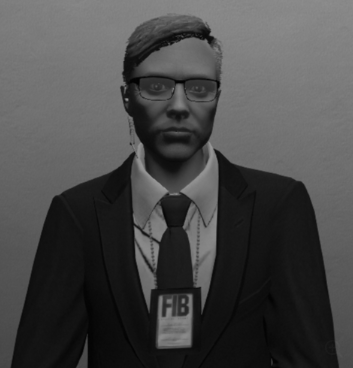

Director del Federal Investigation Bureau (FIB)
Designado por el Gobernador de San Andreas
Tras graduarse en Derecho, Wray trabajó como asistente legal del juez J. Michael Luttig del Tribunal de Apelaciones del Cuarto Circuito de los Estados Unidos entre 1992 y 1993. Posteriormente, se incorporó al bufete King & Spalding.
En 1997, Wray ingresó en el gobierno como Fiscal Federal Auxiliar para el Distrito Norte de Georgia. En 2001, pasó al Departamento de Justicia como Fiscal General Adjunto Asociado y Fiscal General Adjunto Principal.
El 9 de junio de 2003, el presidente George W. Bush nominó a Wray para ser el 33.er Fiscal General Adjunto a cargo de la División Penal del Departamento de Justicia. El Senado confirmó su nombramiento por unanimidad el 11 de septiembre de 2003. Wray fue Fiscal General Adjunto entre 2003 y 2005, bajo la dirección del Fiscal General Adjunto James Comey. Durante su gestión al frente de la División Penal, Wray supervisó importantes investigaciones de fraude, incluyendo la de Enron.
A principios de 2004, el Departamento de Justicia dictaminó que el programa de vigilancia interna sin orden judicial de la administración Bush, denominado Programa de Vigilancia del Terrorismo (TSP, por sus siglas en inglés), era inconstitucional. Según los procedimientos de la Casa Blanca, la renovación del programa requería la aprobación del Departamento de Justicia. En 2006, se reveló que funcionarios del Departamento de Justicia habían recibido presiones de la Casa Blanca para modificar este dictamen, y que el entonces director del FIB, Robert Mueller, y Comey habían preparado sus dimisiones en caso de que la Casa Blanca lo revocara. En 2013, se reveló que Wray amenazó con dimitir junto con ellos por este asunto.
En marzo de 2005, Wray anunció su dimisión. En 2005, Wray recibió el Premio Edmund J. Randolph, la máxima distinción del Departamento de Justicia por servicio público y liderazgo.
En 2005, Wray regresó a King & Spalding como socio litigante en las oficinas de la firma en Washington D.C. y Atlanta. Wray representó a varias empresas incluidas en la lista Fortune 100 y presidió el Grupo de Práctica de Asuntos Especiales e Investigaciones Gubernamentales de King & Spalding. Durante su tiempo en King & Spalding, Wray fue el abogado personal del gobernador de Nueva Jersey, Chris Christie, durante el escándalo de Bridgegate. El bufete de Wray también representa a los gigantes energéticos rusos Gazprom y Rosneft, un asunto que generó controversia durante el proceso de confirmación para el cargo de director del FIB.
Años más tarde, Wray fue designado como Director del FIB del Distrito de San Andreas, asumiendo la supervisión de operaciones federales en Los Santos, Blaine County y el resto del estado, con énfasis en investigaciones de terrorismo doméstico, crimen organizado, corrupción gubernamental y delitos financieros de alto perfil.